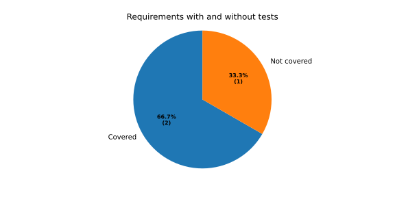

Battery Monitor
Contents
Overview
Requirements
Specifications
Test Cases
Traceability
Coverage Gaps
Requirements without any test case
Requirements without a specification
Test coverage of requirements
Battery Monitor
Coverage Gaps
View page source
Coverage Gaps
Requirements without any test case
ID
Title
Issue
REQ_LOG
Log voltage samples
BMS-103
Requirements without a specification
No needs passed the filters
Test coverage of requirements
